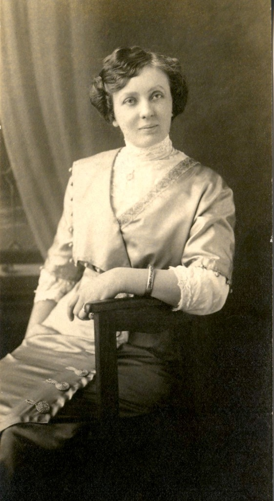
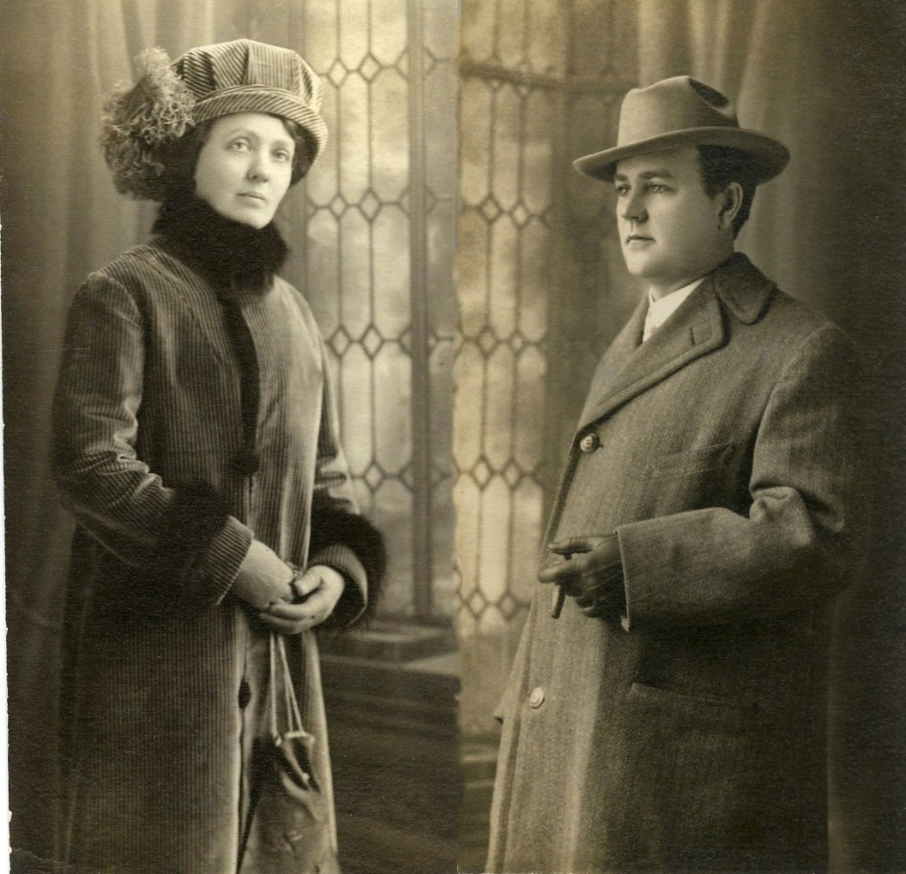
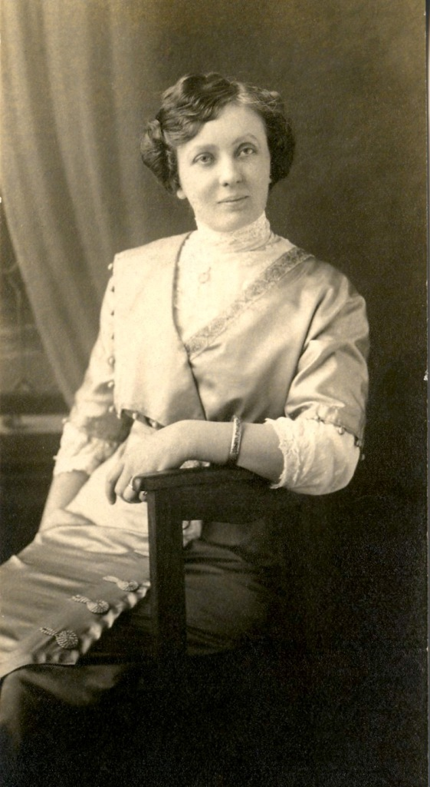
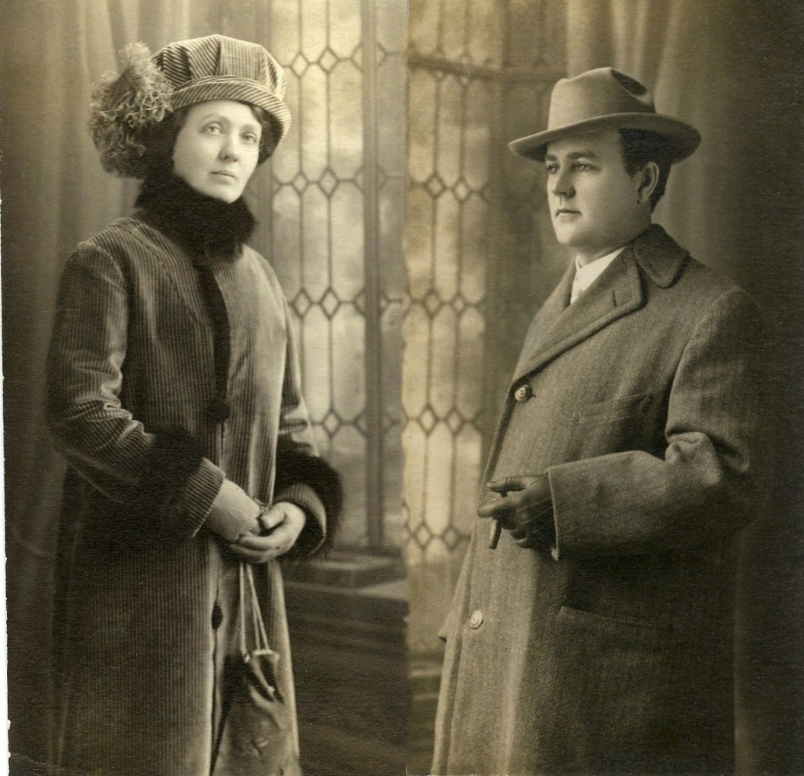

LeOna "Onie" RAMSEY
- Born: 9 Oct 1874, Indiana
- Marriage (1): Seymour Allen "Al" MILLER on 24 Dec 1894 in Goshen, Elkhart County, Indiana
- Died: 18 May 1955, Glendale, Los Angeles County, California at age 80

 General Notes: General Notes:
CHILDREN: Seymour "Al" and LeOna Ramsey bore only one child
RESIDENCES: Wabash, Elkhart County, IN (1880 U.S. Census);
Goshen, Elkhart County, IN (1900 U.S. Census);
Chicago, IL (as per the 1910 U.S. Census, the Seymour & LeOna Miller family lived next door to the Chris & Rose Swart family);
Chicago, IL (1920 U.S. Census);
Republic, Greene County, MO (1930 U.S. Census);
Burbank, Los Angeles County, CA;
Glendale, Los Angeles County, CA (1940's) -- 904 Keeler Street; the house was later destroyed in order to build the Golden State Freeway
Research Notes:
-- Indiana Marriage Collection (1800-1941)
-- Photos courtesy of G.A. Miller
-- Additional Photos of Onie Ramsey (https://flic.kr/s/aHskbGxwCX)
-- Find A Grave, Memorial # 94667036
-- 1880 U.S. Federal Census
-- 1900 U.S. Federal Census
-- 1910 U.S. Federal Census
-- 1920 U.S. Federal Census
-- 1930 U.S. Federal Census
-- 1950 U.S. Federal Census
LeOna married Seymour Allen "Al" MILLER, son of Rev. Van Rensler MILLER and Mary E. DICKINSON, on 24 Dec 1894 in Goshen, Elkhart County, Indiana. (Seymour Allen "Al" MILLER was born on 2 Aug 1871 in Indiana and died on 1 Feb 1948 in Los Angeles, Los Angeles County, California.)
|


1900's
(Click on Picture to View Full Size)") 
")